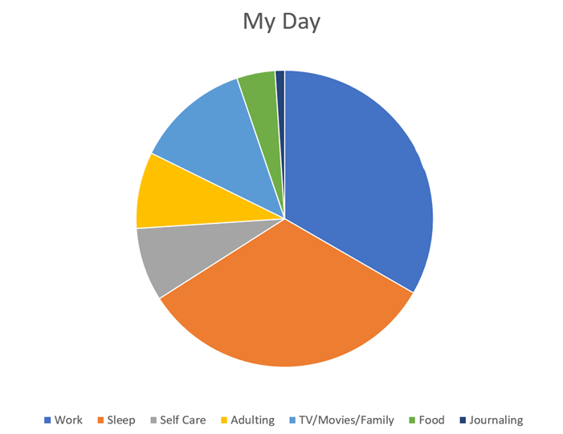

My Self-Care Journal
How I Spend my Time
I'm jealous of people who can write a journal by hand, who can draw in it, and allow it to be less than beautifully formatted. I couldn't stand to make the pie chart for my day by hand. So... I opened Excel and made this chart:

This is my ideal day, even if it isn't my perfect day. Right now, only the work part is true. I work for 8 hours. Well... sometimes more than eight but they only pay me for eight hours.
Sleep
I'm lucky if I get six hours a day. I always tell myself I'm going to go to bed early and sleep more. And, now that we have a Sleep Number Bed, there's just one more piece of technology to shame me. "Oh, your sleep score went down because you only slept four hours."
If they ever came up with a way that people can go without sleep 24/7, I'd be first in line to try it out. I feel as though sleep is a huge timewaster. There are so many more important, interesting things I could be doing.
Self-Care
For me, self-care is mostly wishful thinking. I have reached a point where I must force myself to take a shower and wash my hair. I wear the same clothes day after day, and don't even bother with my nails anymore. I stopped coloring my hair, don't wear makeup, and spend my days in t-shirts and whatever pants I can wear.
Adulting
My husband does the adulting in our family. When I was commuting to the city, he took over the home chores. He pays the bills and takes care of our son, not that he needs much care anymore. I used to commute to New York City, 2.5 hours each way. When I stopped commuting, he said he didn't want to change it.
TV/Movies/Family
I probably spend most time with my son.
We both love movies and video games. He wants to be a director and he's about to graduate from community college. We love to watch movies together. My husband isn't so much into movies anymore. He spends his time fixing up our house and works much harder than I can. He's twelve years older than I am but he works much harder and gets much more done. It's somewhat embarrassing.
Food
I'm morbidly obese but I spend less time eating than I say in the chart. I often skip breakfast and lunch. When I do eat, I'm usually working at the same time. The last time I ate without working at the same time is the last time we went out to eat.
Journaling
This is new.
I allocated 15 minutes a day to write in my journal but I'm resisting it. I didn't even notice that I was resisting it until I realized that I had spent a week "thinking about" starting to write. I was going to try to handwrite the journal, but I can't bring myself to do that. Too messy. So today, the 29th of September is my first day writing at all.
Finally, I decided that doing it is more important than practicing my handwriting. I'm in a bad state right now. And I'm not sure why. I think the only way I'm getting out is by going through and that's why I signed up for this course in the first place.
I have gradually increased the time to the point where I have given over half an hour a day to writing in my journal.
Not sure what I'm going to do on November 1st when I no longer have a day job (Until I find a new one, of course!) I'm thinking that I'd like to give at least half of my day to writing but I'm a little bit scared too.
The exercises in this workshop have freed up my fingers. I'm writing regularly again for the first time in over 18 months. I've done a bit of writing since then but other than what I write for work, it has felt forced and lacked any sense of joy or adventure. Thanks to this course, I'm writing again and playing with the words and ideas.
Prompt 1: Cultivate Joy
Before I even start to write this, the first thing that pops into my head is, "This is bullshit." They say that when you find yourself resisting something it's the thing you need to do. Even now, I feel a bit silly about one or two of the things on my list. I've tried to be honest though, so...
- I love laying in bed, reading a book with soft music playing.
- Talking at night in bed with my husband - there's something so intimate about talking in our darkened bedroom. It seems romantic, sexy, and so intimate.
- Any time spent with my family. I love to travel; I love to just sit around talking.
- I get joy from watching movies with my family. I enjoy watching movies when I'm alone too but it's best when my husband, son, and my mother join me. Somehow, even a bad movie is better when it's with company.
- I like eating meals with my family too. This is something we have not been doing lately. My mother had a stroke almost a year ago and she has moved in with us. I must admit that the three of us have been eating upstairs in our "offices" because the kitchen has become crowded. Lately we instituted a weekly dinner that we take the time to plan. My mother is happy because she is not alone, and we are happy because we no longer feel as though Mom pushed us out of our home.
- I love reading a good book. I used to read three or more books a week. Lately it takes me weeks to read a book. Then again, a year ago, I thought I was losing my sight altogether and couldn't read a book at all.
- I love creating web pages. I like playing with the styles and creating the images. I enjoy adding programming to make the page interactive.
- I also like creating desktop programs even though I don't do it as often as I used to.
- Wandering around a library or bookstore, especially a bookstore.
- Good food gives me joy until I remember the damage it is doing to me. Being on a diet all the time does not give me joy, especially since dieting doesn't seem to work anymore. No matter how little I eat, I don't seem to lose weight.
- I also love going out and taking pictures. This is something I haven't done much lately.
- Although I am happy that I don't have to commute to New York City for work anymore, I miss the city. I especially love traveling to New York City during holiday season. The sights and sounds always made me feel happy, even when I was exhausted.
- Getting new books. I have pillows for that one...
- Riding a bicycle early in the morning when most people are still in bed
- Traveling by train. I used to commute to the city five days a week. I used to love it but I just can't stand the stress anymore. I love New York City and wandering around Manhattan but the five to six hours the commute adds to my day are just too much.
- Silly, geeky things like a lighted keyboard!
Prompt 2: Work through Regret
Things that I regret...
I wish I had finished my degree sooner. I played around too much and didn't take the opportunity to learn when I could do it for free. (Yet I don't regret that I finally did go back and finish.)
I regret being a coward. I let my mother and father convince me that I couldn't take care of myself. I lived with them until I finally married my husband. I believed them when they told me that I wasn't good enough to be a writer.
Desires?
I want to travel more, but I don't want to travel only for work, I want to travel with my husband. When we were married, he promised to take me to Paris. I want to work towards that trip.
Even though I have a BS/IT, what I want is an MFA. I want to work out how to go back to school.
Prompt 3: Redefine Success
My understanding of success:
- Being a good housekeeper
- Having a husband
- Raising children
- Graduate from college
- Owning my own home
- Being perfect, physically, and mentally
I never came close to achieving the things I thought I should want.
What success has become:
- I do have a husband and a son.
- I love (and like) my stepchildren and grandchildren.
- I finally graduated from college, but more for the sake of the piece of paper than anything else.
- I make good money and support my family while my husband takes care of the house. It works!
- I'm working on feeling better and looking better but I'm not expecting to get down to 110 lbs.
I'm not perfect in any way but I've come to accept that I am on the way to become the best version of me.
Prompt 4: Letter to myself at 30
Dear Irene,
Life didn't turn out quite like we planned. Don't get me wrong, it isn't bad, but it isn't what I expected at all.
I know you think we're going to be a famous writer. It hasn't happened yet. We published a book, but few people have noticed it. Even so, I keep working at it.
Some of the things you dreamed about have come true. You still enjoy playing video games. Not only that, you published three of your own. Your curiosity about programming paid off in many more ways than you expected. You have been making money with your computer skills since 1991, so just wait a couple of years!
And it seems you can't get away from it. Every time we decided to do something else, we always ended up back with programming, writing about programming, or something similar. We have been able to work at cool places too, such as Microsoft, Google, and Mozilla.
And travel? We've traveled on business to New York (from Washington State), Florida, Hawaii, San Francisco, and last year we went to London.
You married Warren, the love of your life and it turned out well. He is the man you thought he was, and he has loved and supported everything you have done or wanted to do.
 Together
you have a son who seems to be an extremely talented young man. When I watch
him at work, I can believe he will beat the odds and fulfill his dream of
becoming a movie director.
Together
you have a son who seems to be an extremely talented young man. When I watch
him at work, I can believe he will beat the odds and fulfill his dream of
becoming a movie director.
It was a little scary when he arrived 3 months early. You can see how tiny he was! And in that picture, he had already grown a bit.
I'm running out of things to say. I think that for the most part things have turned out extremely well. Sometimes I miss smoking, but I don't regret quitting. There have been false starts along the way but taking the time to write this letter has reminded me that life isn't over yet and we still have things to do.
Prompt 5: Write from a Quote
I posted this image to my Twitter account a while back. I found the image on either Pixabay or Unsplash and added the quote myself.
Lewis Carroll has been one of my favorite story tellers since I was a child. Grandma gave me a set of record albums with Cyril Ritchard reading Alice in Wonderland, not an abridged children's version but the entire book!
Anyway, Lewis Carroll's words remind me to be adventurous. Even though it says "explanations," in my mind, I think of hesitation instead. In other words, there are times when you must take the chance and do something. This attitude allowed me to fly across the country from New York to Washington to interview for a job at Microsoft.
There was a time when I believed in Magic (with a capital 'M'!) that could make amazing things happen if you only open yourself up to the experience.
Stopping to think about the idea of "adventures first," I feel energized and ready to find my next challenge. When my contract ends on November 1st, I'm going to begin writing a novel that I have tried to write before but failed. This time, I'm ready for it.
This quote also reminds me of a time seven years ago, my employer fired me from a job that I was beginning to hate anyway. There was a change a couple of levels above my boss and most of my colleagues and I were fired for one reason or another over the next six months.
My manager told me on my last day. I called my husband and told him what happened and then had to make the 2.5-hour trip home. When I arrived, he met me at the train with flowers and a card. The card said "Life with you has been a wonderful adventure. I can't wait to see what happens next."